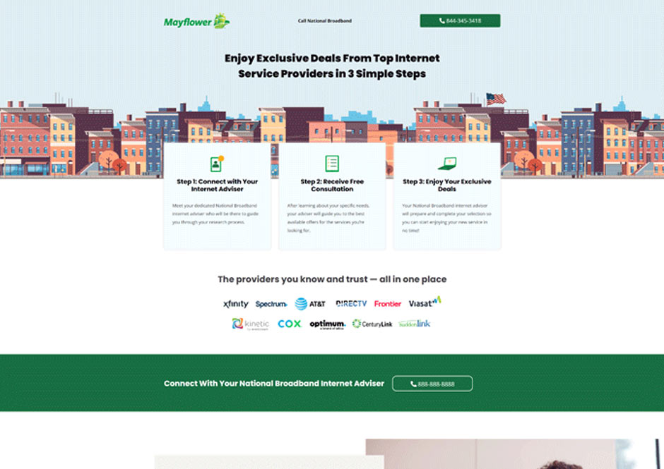
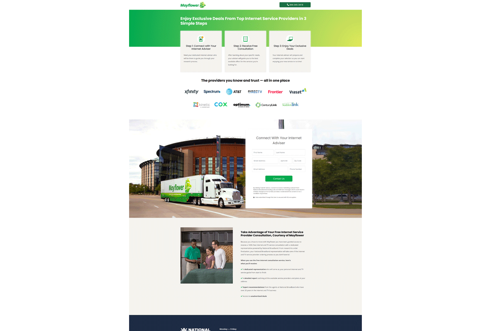
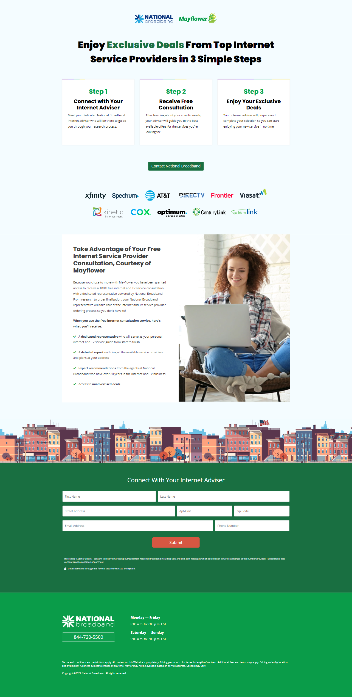
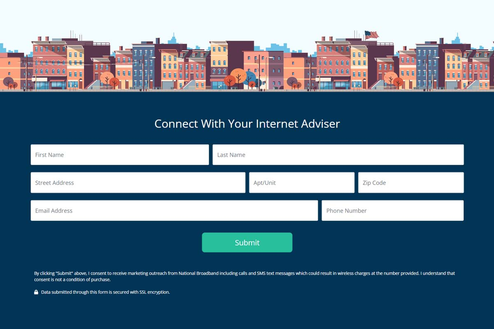

Unigroup × National Broadband
A co‑branded landing page system built for two of the nation’s most recognized relocation brands — United Van Lines and Mayflower — in partnership with National Broadband. Designed and developed in WordPress, these pages serve as a seamless post‑move touchpoint, guiding customers toward internet and TV setup during or after their relocation.

The Challenge
Designing for Two Distinct Brands Under One Parent Company
Unigroup owns both United Van Lines and Mayflower, each with its own brand identity, color palette, typography, and tone.
National Broadband partnered with both brands to offer internet and TV consultation services to customers after a move.
The challenge was to create two separate landing pages that:
- Felt authentic to each brand
- Maintained National Broadband’s identity
- Built trust through clear co‑branding
- Converted users coming from email campaigns
- Worked flawlessly on mobile
- Allowed customers to reach a sales associate during or after business hours
This required careful balance — honoring each brand’s guidelines while still creating a unified, conversion‑focused experience.
What I Did
UX, UI, Co‑Branding, and WordPress Build
- Designed responsive co‑branded landing pages for United Van Lines and Mayflower
- Built the pages in WordPress for fast deployment and easy updates
- Created a shared component system that adapted to each brand’s visual identity
- Worked closely with the National Broadband content team to refine messaging
- Ensured clear information hierarchy and intuitive user flow
- Implemented prominent CTAs and contact options for both business hours and after‑hours support
- Used side‑by‑side logo placement and brand‑specific color palettes to establish trust
- Ensured accessibility and mobile‑first performance
Results
Clearer Communication, Stronger Trust, Higher Conversion
- Two fully responsive landing pages aligned with three brands
- Improved customer understanding of the partnership
- Increased lead capture through optimized forms and CTAs
- Consistent brand experience across email → landing page → sales flow
- A scalable WordPress structure that can support future co‑branded pages




